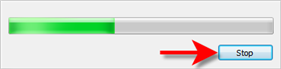
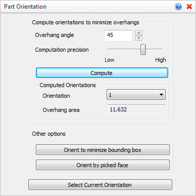
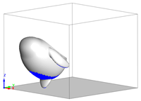
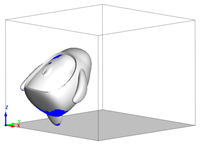
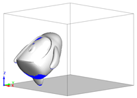
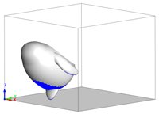
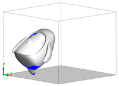
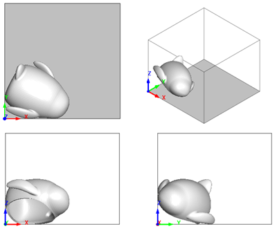

This command can be used to change the orientation of a selected mesh. Once a new orientation is selected, pick the Select Current Orientation button to confirm the change. Note that this command will move the selected mesh to the origin of the selected 3D Printer's volume.
 Computation Time: Orientation computation may take a long time depending on mesh complexity, printer volume, etc. You can select the Stop button on progress control at any time during this command and the total number of possible orientations (see below) calculated up to that point will be available from the list of computed orientations. Computation Time: Orientation computation may take a long time depending on mesh complexity, printer volume, etc. You can select the Stop button on progress control at any time during this command and the total number of possible orientations (see below) calculated up to that point will be available from the list of computed orientations.
 Stop Computation Button |
1.Select mesh to orient. 2.Choose required optimization aim and click "Select Current Orientation": |
|
Screen Pick
|
Optional Information
|
Step 1
|
Select Part Orientation from the 3D Print Tab.
|
Steps 1 & 2 can be performed in reverse order. You can select a mesh first and then select the command icon.
|
Step 2
|
Select the mesh you want to orient and then or Right-click. You can select from the graphics window or from the Browser.
|
Step 3
|
Choose the desired options and then select the Compute button.
|
The minimum number of orientations are determined and listed.
|
Step 4
|
Select the desired orientation from the list.
|
-
|
Step 5
|
Select from the Other Options and/or pick the Select Current Orientation button to move the mesh to that orientation.
|
-
|
|
 This command changes the location and orientation of the selected mesh. If you are unhappy with the results, you my reverse the results using VisualCAD's Undo command. This command changes the location and orientation of the selected mesh. If you are unhappy with the results, you my reverse the results using VisualCAD's Undo command.
|
|
The following options and reference information are available from the Browser.
 Part Orientation Options
•Overhang angle
This is the minimum overhang angle that will be used for computations. •Computation precision
This slider allows you to set the computation precision. •Compute
Select this button to compute the total number of orientations that meet the criteria. Each orientation will be listed under Computed Orientations.
•Orientation
After selecting Compute, select one of the computed orientations from the list. It will be displayed on the screen.
|
|
 1, Overhang Area: 19.47 |
 2, Overhang Area: 19.47 |
 3, Overhang Area: 19.51 |
 4, Overhang Area: 19.59 |
 5, Overhang Area: 19.59 |
•Overhang area
When an orientation is selected from the list, it's computed overhang area is shown here. |
|
•Orient to minimize bounding box
Pick this button to orientate the mesh to the minimum bounding box area in the selected printer's volume.
 Orient to minimize bounding box |
•Orient by picked face
Select this button and then pick a face on the mesh. The mesh will then be orientated with the selected face laying on the XY plane of the printer's bounding box.
|
•Select Current Orientation
After selecting an option in this dialog defining the new orientation of the selected mesh, pick this button to accept the new orientation.. |